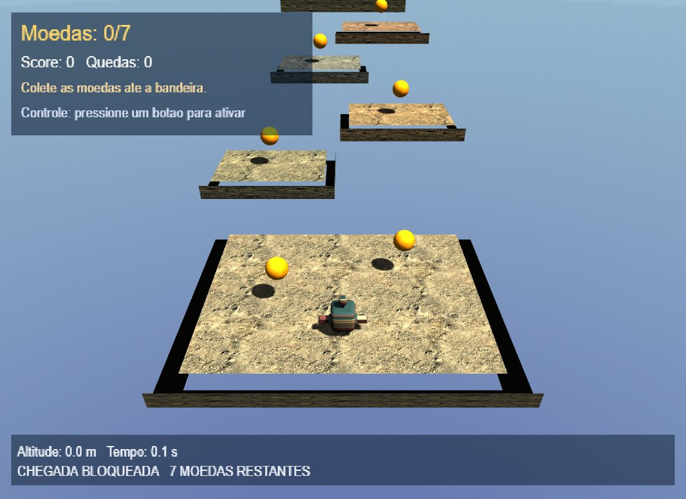
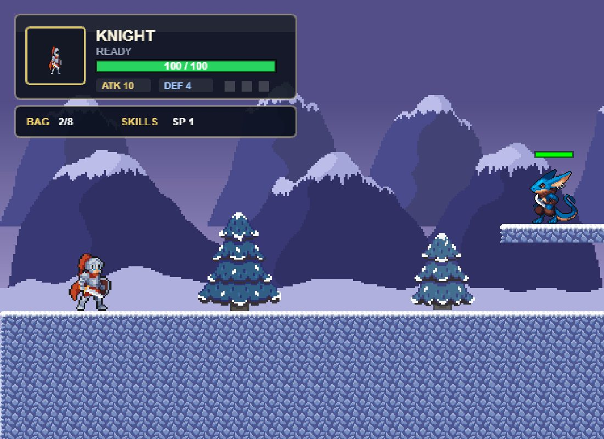

Publique o necessário.
Selecione grupos de runtime e addons em gameforgejs.package.json. O build inclui as
dependências entre grupos, sem reescrever seu jogo.
Framework experimental · 2D + 3D
Do primeiro personagem a mundos próprios. Uma framework para criar jogos no navegador, com classes, componentes e controle sobre o que você constrói.
JavaScript nativo. Canvas 2D. WebGL2.
Node.js é uma ferramenta opcional de
desenvolvimento.

01 / Experimente
Exemplos jogáveis para explorar movimento, combate, câmera, renderização e regras de jogo. As demos são experimentais.

Combos, hitboxes, inventário, habilidades e fases descritas por manifests.
Física, plataformas móveis, coleta e uma câmera acompanhando a aventura.
As demos públicas acompanham a versão publicada. Os avanços da branch de desenvolvimento estão descritos abaixo.
02 / Uma base, não uma caixa-preta
Níveis organizam a cena. Entidades recebem comportamentos. Telas e renderizadores cuidam da apresentação. Evolua o jogo sem abandonar as classes que já funcionam.
Entender a arquitetura em desenvolvimento ↗import { BootstrapGame }
from "gameforgejs/core";
import { FirstLevel }
from "./src/levels/FirstLevel.js";
BootstrapGame({
configPath: "./config/game.config.json",
manifestPath: "./config/resources.json",
levels: [new FirstLevel()],
});Exemplo da branch modular. O template configura o import map e fornece o nível inicial.
03 / Evolução com propósito
A modularização organiza a distribuição e as extensões. O caminho principal continua sendo
BootstrapGame, níveis, entidades e componentes.
Selecione grupos de runtime e addons em gameforgejs.package.json. O build inclui as
dependências entre grupos, sem reescrever seu jogo.
Parallax e máquina de estados extraídos das demos. Classes que usam os serviços da framework, sem inicializar uma segunda engine.
Zero to Hero: aventura 3D Toon com combate ABS, modelos e água; plataforma 2D com pelo menos 20 fases e inimigos com comportamentos variados.
O Zero to Hero ainda não está concluído. Jogos, códigos, assets, lições e validação serão finalizados em conjunto ao término das modificações.
Acompanhar o roteiro de desenvolvimento ↗04 / Seu próximo projeto
O fluxo abaixo usa a branch de desenvolvimento. Para experimentar a versão pública, abra uma das demos acima.
git clone --branch feature/modularize-framework \
https://github.com/Drakopit/GameForgeJS.git
cd GameForgeJS
npm ci
npm start
Depois, visite /examples/showcase/index.html
no endereço informado pelo servidor.